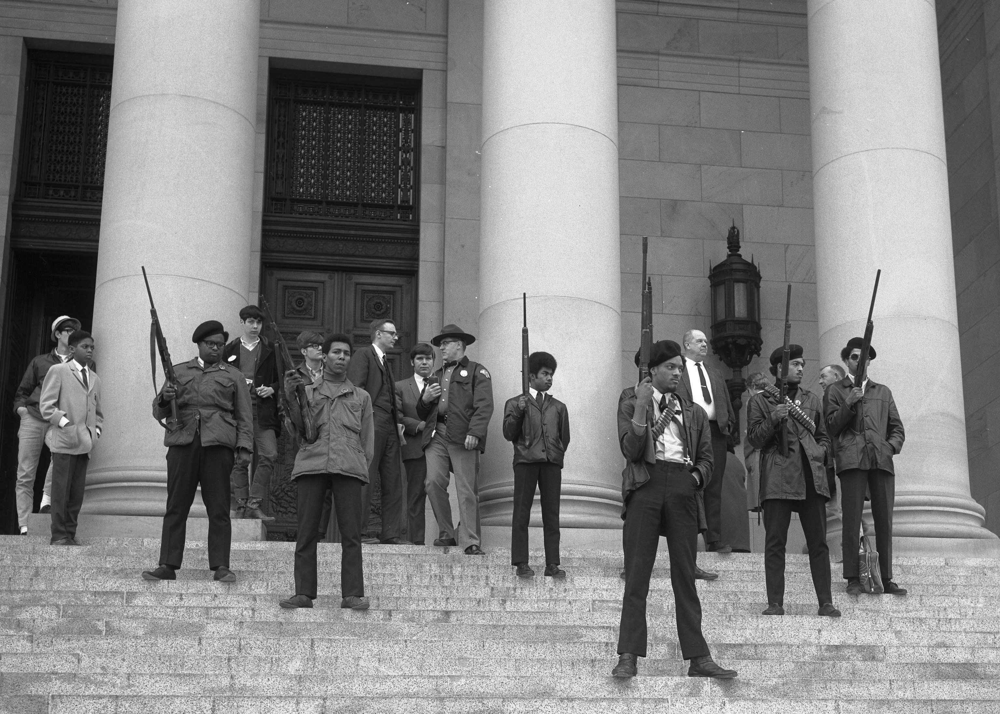
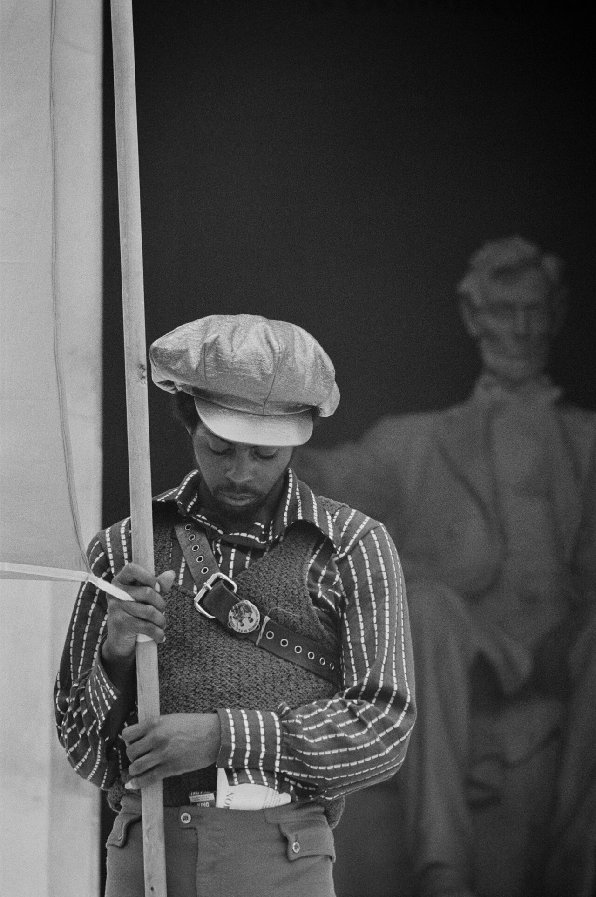
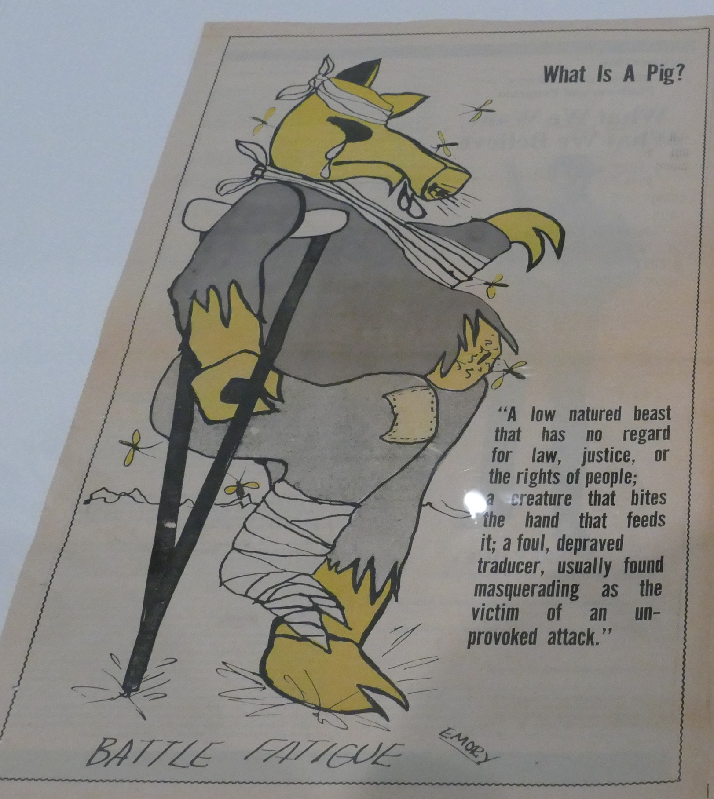

Whoever holds the pen holds the frame. So they took the pen.
Debate this
"You should never tell a story that isn't yours to tell."
Goal of today
What you'll walk out with
Two ideas that change how you read coverage of any group: self-representation and whoever holds the pen holds the frame. Then the method behind both, story-based strategy, which is what Project 2 runs on. And the question about your own cause: who's holding your pen right now?
Feel it
A group in a poor neighborhood starts feeding hot breakfast to schoolkids. Free. Every weekday before class.
Write two headlines for the same program: one from a TV station suspicious of the group, one from the group's own newspaper.
The move, on a different story
A church opens its parking lot overnight so people sleeping in cars have a legal place to park.
"Neighbors object as church lot becomes overnight campground"the local TV station"Safe Lot gives 40 families a legal place to sleep"the church's own newsletter
The reveal
This is the Black Panther Party. The Free Breakfast for Children Program, started January 1969 in Oakland. They fed tens of thousands of kids, and it worked well enough that federally funded school breakfast later followed the model.
"…potentially the greatest threat to efforts by authorities to neutralize the BPP and destroy what it stands for."
J. Edgar Hoover, internal FBI memo, May 1969, describing the breakfast program. Not the guns. The breakfast.

Black Panther Party members on the steps of the Washington State Capitol, Olympia, February 28, 1969, protesting a proposed gun ban (CIR Online, CC BY 2.0, via Wikimedia Commons).
Where they came from, and what the country saw
Oakland, October 1966. Huey Newton and Bobby Seale, two college students, write a Ten-Point Program: decent housing, an education that tells the truth about this country, an end to police brutality. Their first tactic is cop-watching. Open carry was legal, so they followed police through Oakland with a shotgun and a law book and read arrestees their rights out loud on the sidewalk. California banned open carry in 1967, a bill the NRA backed and Governor Reagan signed, and the thirty Panthers who went to the capitol to protest it made the image you are looking at. Most of their actual work was survival programs: breakfast, clinics, ambulances, sickle-cell testing, schools.

A Black Panther Party member with a banner, Washington, D.C., 1970 (Library of Congress, public domain).
The choice
Hoover called them "the greatest threat to the internal security of the country." A political party running a breakfast program. They could have kept demanding fairer coverage. Instead they printed their own paper.
Why build a whole newspaper instead of firing rebuttals at the TV station?
Here's the idea
Self-representation
A community authoring its own image, in a medium it controls, instead of being described by outsiders.
The Black Panther
The Party's newspaper, started 1967 in Oakland. At its peak, more than 300,000 copies a week, the most-read Black paper in the country.
A rebuttal still lives inside someone else's frame: their story, their platform, their schedule, and the correction never travels as far as the accusation did. Owning the medium flips that. You set the subject, the words, and the pictures, and you decide what the country never gets to call you in the first place.
Emory Douglas, the Party's Minister of Culture and the paper's artist from 1967 to the early 1980s. Thick black outlines. The community drawn large and dignified. Power drawn as the pig. Cheap to print, legible enough that a child could read it.
Project it live: smarthistory.org/emory-douglas-black-panther/ · or the scanned issues at letterformarchive.org
The mirror
What does it do to a community to open its own paper every week and see people who look like them drawn as heroes instead of suspects?
Here's the idea
Douglas understood a picture as a mirror. Advertising showed people a life they couldn't afford. The news showed them people who looked like them in handcuffs. A community that keeps seeing itself as the villain starts to believe it, and a community that sees itself as the hero can begin to act like one. "Art has relevancy," Douglas said, "whether it's to exploit you, or pacify you, or to enlighten you and inform you."
The phone as the penIn May 2020, a 17-year-old named Darnella Frazier filmed the murder of George Floyd. The police statement called it a "medical incident during police interaction." Her nine minutes is the only reason the country saw something else. Pulitzer special citation, 2021.
The mirror, at scaleBlack Panther (2018) and Into the Spider-Verse made the same argument to a mass audience, and the reaction was people describing what it felt like to be drawn large. Douglas's mirror with a Marvel budget.
Made by, not aboutJudas and the Black Messiah (2021) put Fred Hampton at the center of his own story fifty years late. Reservation Dogs was written, directed, and acted almost entirely by Indigenous people. Same question as 1967: is the community the author or the subject?
The corner
The paper wasn't mailed or posted. Members sold it by hand on the corner for 25¢, and the seller kept about half.
How is selling a paper on a corner, every day, different from a post going viral?
Distribution was the organizing
Income for members with no other job.
A reason to stand on the corner, visible, every day. Presence.
Every sale is a face-to-face conversation. Recruitment.
The paper's money funded the free breakfast and the clinics.
Handing you the paper was the relationship.
A viral post reaches more people and leaves none of that behind. No corner, no conversation, no one you'd know tomorrow.

Emory Douglas, "What Is A Pig? / Battle Fatigue," in The Black Panther, with the Party's own definition printed beside the drawing. Photographed at Tate Modern's Soul of a Nation, 2017 (CC BY-SA 2.0, via Wikimedia Commons).
The pig
Douglas drew police as pigs for thirteen years, and the paper printed a definition next to it, the way a dictionary would.
Douglas did not invent this word. Where do you think "pig" for a cop comes from, and why did it stick this time?
Here's the idea
The word is old and British. The Dictionary of the Vulgar Tongue, a slang dictionary published in 1811, lists it flatly: "PIG. A police officer. A China street pig; a Bow-street officer." Then it sat unused for a century and a half.
Newton chose it on purpose. Police already had a fear image in the neighborhood, so the Party wanted a label that made them look low instead of frightening.
The paper printed it like a dictionary entry: "A low natured beast that has no regard for law, justice, or the rights of people… usually found masquerading as the victim of an unprovoked attack."
Douglas gave it a face every week, in a paper reaching 300,000 people.
By the 1968 Democratic National Convention, protesters who had never read the paper were chanting it on live television.
A dead 1811 slang word became standard American protest vocabulary in about two years.
They didn't coin it. They circulated it, defined it, drew it, and repeated it until it was the country's word.
A choice you will actually have to make
Douglas drew police as pigs. It was effective, it was memorable, and it was deliberate dehumanization of a group of people. Both at once.
What it buys youInstant clarity and fast solidarity. Nobody is confused about whose side the paper is on. An in-group forms around a shared enemy quicker than around a shared program.
What it costs youEveryone in the middle. A person who might have been persuaded now has to join a side first. And you hand your opponent a grievance to point at, which they will use.
Your campaign will meet the same fork. There will be somebody whose decision you are trying to change: a landlord, a developer, an administrator, a company.
Whichever way you go, go there knowingly.
In Project 2 you will write down how your campaign talks about whoever stands in its way, and why.
Hold the whole of it
The paper was community journalism and open advocacy. The Party said so; it never claimed neutrality.
The sexism is documented. At the Party's height women were nearly two-thirds of the membership while leadership stayed male. Elaine Brown chaired it from 1974 to 1977, the only woman ever to, appointed women to the central committee, and left after sustained resistance to her authority. Her memoir A Taste of Power is the account to read.
And the state really was trying to destroy them.COINTELPRO was a secret FBI program that forged letters between Panthers and rival groups to provoke violence. On December 4, 1969, Chicago police killed Fred Hampton, 21, and Mark Clark, 22, in a raid; Hampton's own head of security, William O'Neal, was an FBI informant who supplied the floor plan and was paid a bonus. The Senate's Church Committee reported in 1976, and one chapter is titled "The FBI's Covert Action Program to Destroy the Black Panther Party." Congress's own wording.
They seized the power to frame their own story instead of leaving it to people who wished them harm.
Name the theory
Everything you watched today has a name: story-based strategy.
The Center for Story-based Strategy teaches that any story breaks into five elements. You diagnose theirs, then build yours on purpose.
Conflict
Theirs: armed radicals vs. public order. The Party's: hungry children vs. a government that would rather police them than feed them.
Characters
Theirs: the Panther is the threat, the police are the protagonist. The Party's: the child eating breakfast is the protagonist, and the state has a decision to make.
Imagery
Theirs: the shotgun on the capitol steps. The Party's: the community drawn large and dignified, and the pig on crutches.
Foreshadowing
Theirs: this ends in violence, so act now. The Party's: we already run the clinic and the school, so this ends with us governing ourselves.
Underlying assumption
Theirs: that a Black political party arming itself must be criminal rather than lawful. Open carry was legal, which is why that assumption had to stay unstated.
Of those five, which one is easiest for a small campaign to actually change?
Here's the idea
The underlying assumption, because it is the only element the audience supplies themselves. Imagery is expensive and characters get cast by whoever reaches the most people, but the assumption works unnoticed, and saying it out loud is free. Once somebody hears "this story only works if you believe a hungry child did something wrong," they can't un-hear it.
George Lakoff, a cognitive linguist writing in Don't Think of an Elephant! (2004), gives the other half: "activating a frame, even when rejecting it, strengthens the frame." Deny their words and you repeat their words. The Party didn't run rebuttals. It printed its own paper and spoke from its own values.
This is the method Project 2 runs on. You'll diagnose the story circulating about your cause with these same five elements, name its underlying assumption, and write the version you want people carrying instead.
Workshop
Design one front page that tells a community's story from the inside.
Take a community or cause and pick a format you could actually make: a one-page papera zinea photo seriesa wall murala printed newsletter
Worked example · a needle exchange facing closureThe frame to refuse."Residents say needle program draws addicts downtown"the outsider version: a problem arriving in a neighborhoodYour headline."Nobody who used this program died this year"same program, told from inside: a number they can't argue withYour hero image. Marcus, the outreach worker who has done this route for nine years, photographed at eye level in daylight, doing the job. Not a pile of syringes.
Distribution as organizing. The laundromat and the bus stop on the same route, same time, every week, so the same forty people see the same face.
Now do all four for your own cause. Pick someone to report back.
The frame to refuse
What's the outsider headline or image you're up against, the way you'd get shown if you did nothing?
Your headline
Same event, told from inside. What do you name it, and what do you refuse to call it?
Your hero image
Who gets photographed large and dignified? Name an actual person or role, not a logo and not a pity shot.
Distribution as organizing
Where and how do you hand it out so distributing it builds relationships, not views?
How the next two weeks run
Thursday this weekWe meet on Zoom as usual, and the module is where you build the four-part front page for your own cause.
Next TuesdayFall break. No class.
Next ThursdayWe do not meet on Zoom either, but the ACT UP module is still due. With nothing on the calendar, the whole week is yours to work it at your own pace.
Due next weekField Notebook midterm check-in. Gather everything so far into your Doc and upload it.
A ten-minute prime, before you open the Week 8 module. Read "Silence = Death: The Beginning of the Epidemic," by Katherine Ott, a curator at the Smithsonian's National Museum of American History, written for World AIDS Day in 2018. Free, about seven minutes, linked in the module. Then write one line in your notebook:
If the whole country was ignoring a crisis that was killing your community, what would you design or stage to force people to look?
Keep that line where you can find it. It's where ACT UP starts.